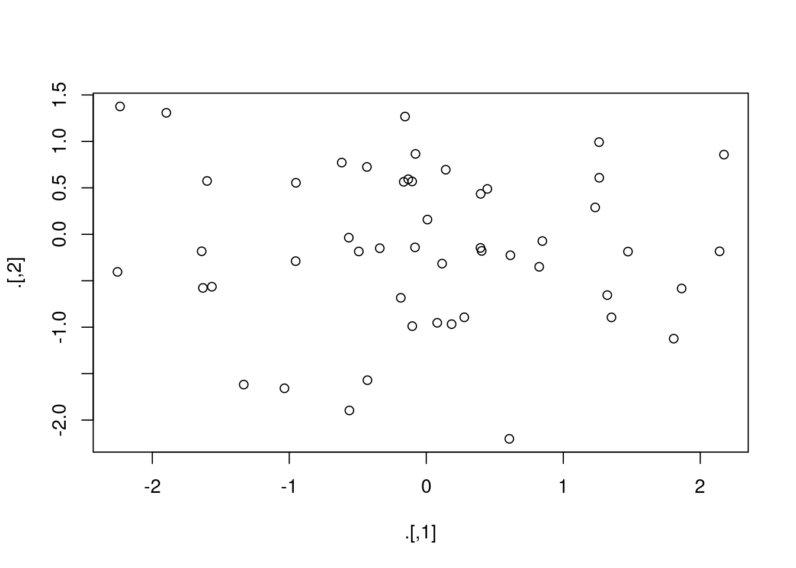

library(magrittr)
library(datos)18 Pipes
18.1 Introducción
Los pipes son una herramienta poderosa para expresar claramente una secuencia de múltiples operaciones. Hasta aquí, has venido usándolos sin saber cómo funcionan o qué alternativas existen. En este capítulo ya es tiempo de explorarlos en más detalle. En él aprenderás qué alternativas existen, cuándo no deberías utilizarlos y algunas herramientas útiles relacionadas.
18.1.1 Prerequisitos
El pipe, %>%, viene del paquete magrittr de Stefan Milton Bache. Los paquetes del Tidyverse cargan %>% automáticamente, por lo que usualmente no tendrás que cargar magrittr de forma explícita. Sin embargo, como acá nos enfocaremos en el uso de pipes y no usaremos otros paquetes del tidyverse, lo cargaremos explícitamente.
18.2 Alternativas a los pipes
El objetivo de un pipe es ayudarte a escribir código de una manera que sea más fácil de leer y entender. Para ver por qué un pipe es tan útil, vamos a explorar diferentes formas de escribir el mismo código. Usemos código para contar una historia acerca de un pequeño conejito llamado Foo Foo:
El pequeño conejito Foo Foo Fue saltando por el bosque Recogiendo ratones del campo Y golpeándolos en la cabeza
Este es un poema popular para niños que se acompaña mediante gestos con las manos.
Empezaremos por definir un objeto que represente al pequeño conejito Foo Foo:
foo_foo <- pequeño_conejito()Y usaremos una función para cada verbo clave: saltar(), recoger(), y golpear(). Usando este objeto y estos verbos, existen (al menos) cuatro maneras en las que podemos volver a contar la historia en código:
- Guardar cada paso intermedio como un nuevo objeto.
- Sobreescribir el objeto original muchas veces.
- Componer funciones.
- Usar un pipe.
Desarrollaremos cada uno de estos enfoques, mostrándote el código y hablando de las ventajas y desventajas.
18.2.1 Pasos intermedios
El enfoque más sencillo es guardar cada paso como un nuevo objeto:
foo_foo_1 <- saltar(foo_foo, a_traves = bosque)
foo_foo_2 <- recoger(foo_foo_1, que = ratones_del_campo)
foo_foo_3 <- golpear(foo_foo_2, en = cabeza)La principal desventaja de esta manera es que te obliga a nombrar cada paso intermedio. Si hay nombres naturales, es una buena idea y deberías hacerlo. Pero muchas veces, como en este ejemplo, no hay nombres naturales, por lo que agregas sufijos numéricos para hacer los nombres únicos. Esto conduce a dos problemas:
El código está abarrotado con nombres poco importantes.
Hay que incrementar cuidadosamente el sufijo en cada línea.
Cada vez que escribimos código como este, nos ocurre que inevitablemente usamos el número incorrecto en una línea y luego perdemos 10 minutos rascándonos la cabeza tratándo de darnos cuenta por qué no funciona. Probablemente te preocupa también que esta forma crea muchas copias de tus datos y ocupa demasiada memoria. Sorprendentemente, este no es el caso. Primero, ten en cuenta que preocuparse proactivamente de la memoria no es una manera útil de invertir tu tiempo: preocúpate acerca de ello cuando se convierta en un problema (es decir, cuando te quedes sin memoria), no antes. En segundo lugar, R no es estúpido y compartirá las columnas a lo largo de los dataframes cuando sea posible. Echemos un vistazo a un pipe de manipulación de datos en el que agregamos una nueva columna a datos::diamantes:
diamantes2 <- diamantes %>%
dplyr::mutate(precio_por_quilate = precio / quilate)
pryr::object_size(diamantes)3.46 MBpryr::object_size(diamantes2)3.89 MBpryr::object_size(diamantes, diamantes2)3.89 MBpryr::object_size() (tamaño de objeto) devuelve la cantidad de memoria ocupada por todos los argumentos de un objeto. Los resultados parecen contraintuitivos al principio:
diamantesocupa 3.46 MB,diamantes2ocupa 3.89 MB,- ¡
diamantesydiamantes2juntos ocupan 3.89 MB!
¿Cómo es que funciona esto? Bien, diamantes2 tiene 10 columnas en común con diamantes: no hay necesidad de duplicar los datos, así que ambos data frames tienen variables en común. Estas variables solo serán copiadas si modificas una de ellas. En el siguiente ejemplo, modificamos un solo valor en diamantes$quilate. Esto significa que la variable quilate no podrá ser compartida entre los dos data frames, por lo que se debe realizar una copia. El tamaño de cada data frame no cambia, pero el tamaño colectivo se incrementa:
diamantes$quilate[1] <- NA
pryr::object_size(diamantes)3.46 MBpryr::object_size(diamantes2)3.89 MBpryr::object_size(diamantes, diamantes2)4.32 MB(Fíjate que aquí usamos pryr::object_size(), no la versión de object.size() ya precargada. object.size() toma un solo objeto, por lo que no puede computar cómo los datos son compartidos a través de múltiples objetos.)
18.2.2 Sobrescribir el original
En vez de crear objetos en cada paso intermedio, podemos sobrescribir el objeto original:
foo_foo <- saltar(foo_foo, a_traves = bosque)
foo_foo <- recoger(foo_foo, que = ratones_del_campo)
foo_foo <- golpear(foo_foo, en = cabeza)Esto es menos tipeo (y menos que pensar), así que es menos probable que cometas errores. Sin embargo, hay dos problemas:
Depurar es doloroso: si cometes un error vas a necesitar correr de nuevo todo el código desde el principio.
La repetición del objeto a medida que es transformado (¡hemos escrito foo_foo 6 veces!) hace poco transparente lo que está siendo cambiado en cada línea.
18.2.3 Composición de funciones
Otro enfoque es abandonar la asignación y encadenar todas las llamadas a las funciones:
golpear(
recoger(
saltar(foo_foo, a_traves = bosque),
que = raton_de_campo
),
en = la_cabeza
)Aquí la desventaja es que se debe leer de adentro hacia afuera, de derecha a izquierda y que los argumentos terminan separados (problema que se conoce como Dagwood sandwich). En resumen, este código es difícil de leer para un ser humano.
18.2.4 Uso de pipe
Finalmente, podemos usar el pipe:
foo_foo %>%
saltar(a_traves = bosque) %>%
recoger(que = ratones_campo) %>%
golpear(en = cabeza)Esta es nuestra forma preferida, ya que se enfoca en los verbos, no en los sustantivos. Puedes leer esta secuencia de composición de funciones como si fuera un conjunto de acciones imperativas. Foo salta, luego recoge, luego golpea. La desventaja, por supuesto, es que necesitas estar familiarizado con el uso de los pipes. Si nunca has visto %>% antes, no tendrás idea acerca de lo que realiza el código. Afortunadamente, la mayoría de la gente entiende la idea fácilmente, así que cuando compartes tu código con otros que no están familiarizados con los pipes, puedes enseñárselos fácilmente.
El pipe trabaja realizando una “transformación léxica”: detrás de escena, magrittr reensambla el código en el pipe a una forma que funciona sobrescribiendo un objeto intermedio. Cuando se ejecuta un pipe como el de arriba, magrittr hace algo como esto:
mi_pipe <- function(.) {
. <- saltar(., a_traves = bosque)
. <- recoger(., que = ratones_campo)
golpear(., en = la_cabeza)
}
mi_pipe(foo_foo)Esto significa que un pipe no funcionará con dos clases de funciones: 1. Funciones que usan el entorno actual. Por ejemplo, assign() (asignar) creará una nueva variable con el nombre dado en el entorno actual:
assign("x", 10)
x[1] 10"x" %>% assign(100)
x[1] 10El uso de la asignación con el pipe no funcionará porque lo asigna a un entorno temporal usado por %>%. Si quieres usar la asignación con un pipe, debes explicitar el entorno:
env <- environment()
"x" %>% assign(100, envir = env)
x[1] 100Otras funciones con este problema incluyen get() y load().
- Funciones que usan lazy evaluation (evaluación diferida o “perezosa”). En R, los argumentos de las funciones son solamente computados cuando la función los usa, no antes de llamar a la función. El pipe computa cada elemento por turno, por lo que no puedes confiar en este comportamiento.
Un caso en el cual esto es un problema es el de tryCatch(), que te permite capturar y manejar errores:
tryCatch(stop("!"), error = function(e) "Un error")[1] "Un error"stop("!") %>%
tryCatch(error = function(e) "Un error")[1] "Un error"Hay una cantidad relativamente grande de funciones con este comportamiento, que incluye a try(), suppressMessages() y suppressWarnings() en R base.
18.3 Cuándo no usar el pipe
El pipe es una herramienta poderosa, pero no es la única herramienta a tu disposición ¡y no soluciona todos los problemas! Los pipes son mayoritariamente usados para reescribir una secuencia lineal bastante corta de operaciones. Creemos que deberías buscar otra herramienta cuando:
- Tus pipes son más largos que (digamos) 10 pasos. En ese caso, crea objetos intermedios con nombres significativos. Esto hará la depuración más fácil, porque puedes chequear con mayor facilidad los resultados intermedios. Además, hace más simple entender tu código, ya que los nombres de las variables pueden ayudar a comunicar la intención.
- Tienes múltiples inputs y outputs. Si no hay un objeto principal para ser transformado, sino dos o más objetos siendo combinados juntos, no uses el pipe.
- Si estás empezando a pensar acerca de un grafo dirigido con una estructura de dependencia compleja. Los pipes son fundamentalmente lineales y usarlos para expresar relaciones complejas, típicamente llevarán a un código confuso.
18.4 Otras herramientas de magrittr
Todos los paquetes del tidyverse automáticamente harán que %>% esté disponible, por lo que normalmente no será necesario cargar magrittr explícitamente. De todas formas, hay otras herramientas útiles dentro de magrittr que podrías querer utilizar:
- Cuando se trabaja en un pipe más complejo, a veces es útil llamar a una función por sus efectos secundarios. Tal vez quieras imprimir el objeto actual, o graficarlo, o guardarlo en el disco. Muchas veces, estas funciones no devuelven nada, efectivamente terminando el pipe.
Para solucionar este problema, puedes usar el pipe “T”. %T>%trabaja igual que %>%, excepto que devuelve el lado izquierdo en vez del lado derecho. Se lo llama “T” porque literalmente tiene la forma de una T.
rnorm(100) %>%
matrix(ncol = 2) %>%
plot() %>%
str()
NULLrnorm(100) %>%
matrix(ncol = 2) %T>%
plot() %>%
str() num [1:50, 1:2] 1.69 -1.28 1.32 1.34 1.83 ...- Si estás trabajando con funciones que no tienen una API basada en data frames (esto es, pasas vectores individuales, no un data frame o expresiones que serán evaluadas en el contexto de un data frame), puedes encontrar
%$%útil. Este operador “explota” las variables en un dataframe para que te puedas referir a ellas de manera explícita. Esto es útil cuando se trabaja con muchas funciones en R base:
mtautos %$%
cor(cilindrada, millas)[1] -0.8475514- Para asignaciones, magrittr provee el operador
%<>%que te permite reemplazar el código de la siguiente forma:
mtautos <- mtautos %>%
transform(cilindros = cilindros * 2)con
mtautos %<>% transform(cilindros = cilindros * 2)No somos partidarios de este operador porque creemos que una asignación es una operación especial que siempre debe ser clara cuando sucede. En nuestra opinión, un poco de duplicación (esto es, repetir el nombre de un objeto dos veces) está bien para lograr hacer la asignación más explícita.